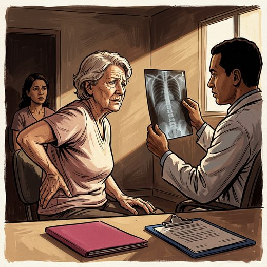

Consulta rápida à beira do leito
Condutas, doses e interações.
Referências da aula · 5
- Morin SN, Leslie WD, Schousboe JT. Osteoporosis: a review. JAMA. Published online June 30, 2025. doi:10.1001/jama.2025.6003.DOI
- O'Mahony D, Cherubini A, Guiteras AR, et al. STOPP/START criteria for potentially inappropriate prescribing in older people: version 3. Eur Geriatr Med. 2023;14(4):625-32. PMID 37256475. doi:10.1007/s41999-023-00777-y.PubMedDOI
- Montero-Odasso M, van der Velde N, Martin FC, et al. World guidelines for falls prevention and management for older adults: a global initiative. Age Ageing. 2022;51(9):afac205. PMID 36178003. doi:10.1093/ageing/afac205.PubMedDOI
- Sociedade Brasileira de Endocrinologia e Metabologia; Associação Brasileira de Avaliação Óssea e Osteometabolismo. Consenso sobre definição e manejo do muito alto risco de fratura em mulheres com osteoporose pós-menopausa. 2022.
- World Health Organization. Assessment of fracture risk and its application to screening for postmenopausal osteoporosis. WHO Technical Report Series 843. Geneva: WHO; 1994.
Documentos oficiais
Leis e publicações do Ministério da Saúde sobre o cuidado da pessoa idosa, de acesso livre.
Abrir os documentos